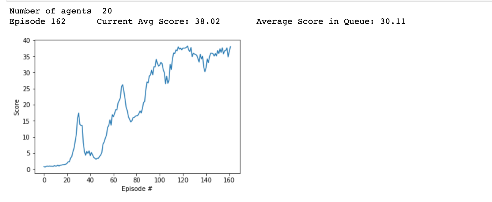

An actor network outputs continuous torques and a critic network scores them.
DQN (Deep Q-Network) chooses from a short list of actions. The banana agent had four (forward, backward, turn left, turn right); DQN scores each one and takes the biggest.
A robot arm needs a continuous action: how hard to twist each joint, any real number from −1 to 1, so there are infinitely many actions to score. The running example is the RF-DDPG repo, a DDPG solution for the Unity ML-Agents Reacher task, where a double-jointed arm keeps its hand on a floating target.
DDPG uses two networks. An actor turns the state into torques, and a critic scores that state and those torques. The critic learns its scores from rewards as DQN does, and the actor moves its torques in the direction the critic scores higher.
All twenty arms act every step, but learning runs in bursts (Figure 1).
On this page
The Reacher environment is a double-jointed arm bolted to a table, one segment driven by the shoulder and one by the elbow. The job is to keep the hand on a small floating ball for a whole episode, not to touch it once.
Every step the agent gets thirty-three numbers: how bent each joint is, how fast it swings, where the segments are, and where the target sits.
It answers with four torques, two per joint, one for each axis it can turn about, each any real number from −1 to 1. That is a continuous action space: infinitely many settings, recomputed every step.
Episodes run a fixed number of steps. A step with the hand on the target pays +0.1, any other step pays 0, and the episode score is the total.
The repo trains twenty identical arms in parallel in one Unity build; Unity runs the physics and Python runs the networks. brain_name is the key of the arms in the output of env; s is (20, 33), one row per arm, and actions is (20, 4).
import numpy as np
NUM_ARMS = 20
out = env.reset(train_mode=True)
info = out[brain_name]
s = info.vector_observations
scores = np.zeros(NUM_ARMS)
while True:
actions = agent.act(s)
out = env.step(actions)
info = out[brain_name]
scores += info.rewards
s = info.vector_observations
if np.any(info.local_done):
breakThree things make it hard. Most steps pay 0, so the agent must work out which of hundreds of past torques earned each +0.1: the credit assignment problem. A slightly wrong torque fails quietly, drifting the hand a millimeter off. And the arm never starts in the same pose twice, so the policy must work from any 33-number state.
Early in training the hand moves in circles and scores under 1; late in training it stays on the ball and scores 35 to 38 (Figure 11).
DQN chooses with one rule: take the action with the biggest Q value. That needs a finite list of actions.
The DDPG paper (Lillicrap et al., 2016) keeps DQN's machinery, the Q-network, the replay buffer (a memory of past steps that training samples from at random) and the target network (a slow copy whose values hold still), and adds an actor trained with the deterministic policy gradient: the actor improves by following the gradient the critic hands it.
It is actor-critic and model-free (it learns from rewards alone, with no model of how the world responds). One algorithm, architecture and set of hyperparameters (settings chosen before training) solved more than 20 simulated physics tasks, among them cartpole swing-up, dexterous manipulation, legged locomotion and car driving. Its policies were competitive with a planner that had full access to the dynamics, and for many tasks it learned straight from raw pixels.
Figure 3. Argmax needs a list of actions; a continuous torque has none, so the actor outputs the action itself.
DDPG splits the job in two. The actor is a policy network: state in, four torques out. The critic is a Q-network: a state-action pair in, one score out.
The layer sizes come from the repo. The actor is a plain stack: 33 state numbers in, three hidden layers, 4 numbers out. Its last layer is a tanh, which squashes every output into [−1, 1], so it cannot ask for an impossible torque. Clipping would have zero gradient outside the range; tanh is smooth, so gradients keep flowing. The repo also applies batch normalization to the input state, and in the actor after the first two hidden layers; the snippets leave it out.
Figure 4. Same layer sizes, opposite jobs: the actor proposes torques, the critic only judges them.
import torch
import torch.nn as nn
import torch.nn.functional as F
S, A = 33, 4
L = nn.Linear
actor = nn.Sequential()
actor.append(L(S, 256))
actor.append(nn.ReLU())
actor.append(L(256, 128))
actor.append(nn.ReLU())
actor.append(L(128, 64))
actor.append(nn.ReLU())
actor.append(L(64, A))
actor.append(nn.Tanh())The critic adds the action late. The state goes through a 256-unit layer first, then torch.cat joins the 4 torques to it, giving 260 numbers, and the head turns them into one score.
class Critic(nn.Module):
def __init__(self):
super().__init__()
self.fs = L(S, 256)
self.f1 = L(256 + A, 128)
self.f2 = L(128, 64)
self.out = L(64, 1)
def forward(self, s, a):
h = F.relu(self.fs(s))
h = torch.cat([h, a], 1)
h = F.relu(self.f1(h))
h = F.relu(self.f2(h))
return self.out(h)S, A and L from the actor snippet; the action joins after the first layer.Deterministic means the actor outputs the same torques for the same state, with no sampling. A stochastic policy samples from a distribution and explores for free, but it jitters, and an arm should hold still. DDPG adds exploration separately, as noise on the actions.
Each network has roughly 50,000 parameters, just over 100,000 together, plus their target copies.
DDPG runs one loop: the actor turns the state into torques, the world returns a reward and the next state, the critic scores the state and torques, and the critic's gradient goes back to the actor.
Figure 5. State, torques, world, reward, critic, gradient: each lap feeds the next. Not drawn: the replay buffer between the world and the critic, and the critic's target copy.
The critic learns like DQN's Q-network, by a Bellman backup: a move's value should equal the reward it just earned plus the discounted value of where it leaves the arm. Gamma, the discount factor, shrinks that future part. One recorded step (state, torques, reward, next state) is a transition, and the next value comes from the target actor and target critic, not from a search.
In PyTorch, over a minibatch (a small random set of transitions from the replay buffer); r has shape (B, 1) for a batch of B.
with torch.no_grad():
a2 = actor_target(s_next)
q2 = critic_target(s_next, a2)
y = r + gamma * q2
loss = F.mse_loss(critic(s, a), y)
critic_opt.zero_grad()
loss.backward()
critic_opt.step()a2 and the target critic scores it (critic card in section 5, line 1).The critic never picks an action; it only judges pairs. Choosing is the actor's job.
The actor never sees a target action. Instead, ask the critic which way the torques should move to score higher. The critic is differentiable, so the gradient of Q with respect to the action answers exactly, and the actor's weights shift so its torques slide that way.
The chain rule turns that into one line, the deterministic policy gradient theorem:
In code, the actor minimizes minus Q: the first line scores the actor's own torques with the critic, and backward multiplies the two factors by the chain rule. Only the actor's optimizer steps, so the critic is not changed here.
q = critic(s, actor(s))
actor_loss = -q.mean()
actor_opt.zero_grad()
actor_loss.backward()
actor_opt.step()The actor goes through the critic because the Unity physics can be run but not differentiated. The critic is a learned, differentiable model of how good an action is, trained on real rewards by the Bellman backup.
Early on the critic's scores are close to random, and the actor follows them anyway: a wrong critic teaches the actor a wrong action. The stabilizers in Target networks, replay buffer and noise limit this.
DDPG relies on three stabilizers, each preventing one failure (Figure 7).
Figure 7. Each stabilizer prevents one failure: oscillation, overfitting to recent steps, or no exploration.
The critic's target is built from its own predictions, so if the critic changes fast, its target changes fast too. Slow target copies of both networks follow the live ones instead; lerp_ applies the card's blend to every weight, and the same loop runs for the actor pair.
TAU = 1e-3
live = critic.parameters()
tgt = critic_target.parameters()
with torch.no_grad():
for t, p in zip(tgt, live):
t.lerp_(p, TAU)DQN copied its target network in full every 10,000 updates (Mnih et al., 2015); DDPG makes the copy continuous and small.
Every transition from every arm, with its episode-end flag d, goes into one memory, and training samples random minibatches from it. Random sampling breaks the link between consecutive steps, each transition is reused many times, and twenty arms fill the buffer twenty times faster than one.
import random
from collections import deque
BUFFER_SIZE, BATCH = 100_000, 256
buf = deque(maxlen=BUFFER_SIZE)
buf.append((s, a, r, s_next, d))
batch = random.sample(buf, BATCH)A deterministic actor left alone repeats its first guess forever, so during training DDPG adds Ornstein-Uhlenbeck (OU) noise to the torques. Gaussian (white) noise is independent every step, so torques stutter; OU noise remembers its last value and is pulled back toward zero, so it wanders smoothly:
For an arm with inertia (a moving part keeps moving), smooth noise tries coherent strategies ("push left for a while, see what happens") instead of vibrating in place. The DDPG paper chose OU noise for this reason, and the repo keeps it.
One training update has five parts: sample, compute the target, update the critic, update the actor, update the targets. It trains on stored experience, never only on the latest step. This is off-policy learning: the networks learn from experience gathered by older versions of the actor, which is why the replay buffer can be reused.
Figure 8. The live networks learn every update; the target copies follow them slowly.
Figure 9. A two-joint arm on a 2D Reacher at toy scale (the real arm moves in 3D, sees 33 numbers and trains far longer). As training progresses the noise shrinks, the hand's path shrinks from a cloud to a point, and the critic's estimate rises.
The real run is the RF-DDPG repo on the Unity ML-Agents Reacher task, with the settings in Figure 10.
| Setting | Raising it | Lowering it |
|---|---|---|
| Replay buffer | older, more varied batches; adapts more slowly | forgets faster; batches more alike |
| Batch | steadier gradients, more compute per update | cheaper, noisier updates |
| Updates per 256 steps | more reuse of each step; faster, but the critic can overfit | cheaper, slower learning |
| Learning rate | faster, but the critic can oscillate or diverge | steadier, slower |
| Discount γ | staying on the target far ahead counts more | γ = 0 values only the next reward |
| Target update τ | targets follow faster, less stable; τ = 1 copies outright | steadier, slower; τ = 0 freezes them |
| Clip norm | larger critic steps; very large turns clipping off | steadier, slower critic steps |
| OU pull κ (0.15) | shorter, tighter wander | longer drifts |
| OU kick σ (0.2) | wider exploration, noisier torques | narrower; 0 stops exploring |
agent.py, and what raising or lowering each one does.
Figure 11. Score per episode, averaged over the 20 Reacher arms, in the RF-DDPG run. It first passes 30 near episode 95 and dips back to about 26.5 near episode 105. The 100-episode average, which the solve line of 30 applies to, reaches 30.11 at episode 162, the value printed above the plot. The score levels off at 35 to 38.
One arm's score varies a lot from episode to episode. Twenty arms, each with its own exploration noise, average that variation out and fill the buffer with more varied experience.
At test time the actor runs without noise and outputs four new torques every step.
Figure 12. The trained Reacher arm overshoots slightly, corrects and settles on the target. Trimmed clip from the RF-DDPG repo (Unity ML-Agents).
The repo runs one update function 64 times every 256 environment steps, a quarter of an update per step, with the settings in Figure 10; Stable-Baselines3 has a widely used PyTorch DDPG. Each update costs forward passes of both target networks on 256 next states, a forward and backward pass of the critic on 256 transitions, a pass through the actor and critic with a backward pass into the actor, and two blends of target weights.
ddpg_update runs one update on a sampled batch, using the actor, the critic, their target copies and their optimizers from the sections above.
import torch
import torch.nn.functional as F
import torch.nn.utils as U
GAMMA, TAU, CLIP = 0.99, 1e-3, 1.0
tgts = actor_target, critic_target
nets = actor, critic
def soft_update(tgt, live):
dst = list(tgt.parameters())
src = list(live.parameters())
with torch.no_grad():
for t, p in zip(dst, src):
t.lerp_(p, TAU)
@torch.no_grad()
def td_target(r, s_next, done):
a2 = actor_target(s_next)
q2 = critic_target(s_next, a2)
keep = 1 - done
return r + GAMMA * q2 * keep
def ddpg_update(batch):
s, a, r, s_next, done = batch
y = td_target(r, s_next, done)
q = critic(s, a)
critic_loss = F.mse_loss(q, y)
critic_opt.zero_grad()
critic_loss.backward()
w = critic.parameters()
U.clip_grad_norm_(w, CLIP)
critic_opt.step()
q = critic(s, actor(s))
actor_loss = -q.mean()
actor_opt.zero_grad()
actor_loss.backward()
actor_opt.step()
for t, n in zip(tgts, nets):
soft_update(t, n)soft_update.keep is 0 at the end of an episode (update card in section 8, line 1).Three mistakes break this update.
done; without it the last step takes value from the next episode.Each failure has a cause, a sign you can see while training, and a fix.
TD3 (Twin Delayed DDPG) trains two critics and builds the target from the lower score, which keeps an inflated score out of the target and reduces the critic's overestimation of how good a move is. It also updates the actor less often than the critics, and adds a little noise to the target action so the critic cannot exploit sharp, spurious peaks (Fujimoto et al., 2018).
SAC (Soft Actor-Critic) drops determinism. The policy stays stochastic and earns an entropy bonus (entropy measures how spread out its choices are), so exploration lives in the objective instead of being bolted on as OU noise. Haarnoja et al. (2018) report better sample efficiency and stability than DDPG on simulated locomotion tasks such as Hopper, Walker and Humanoid.
Multi-agent DDPG is the subject of the Multi-Agent Reinforcement Learning page. Its repo uses self-play: one shared actor-critic pair drives both rackets. The MADDPG paper gives each agent its own actor and its own centralized critic, which sees every agent's actions.
DDPG fits continuous actions, a cheap simulator, and a controller that should hold still at test time; for a short list of discrete actions, DQN fits better.
Reacher has one learner in a fixed world. What changes when the other player is learning too? The Multi-Agent Reinforcement Learning page answers it with two tennis rackets.